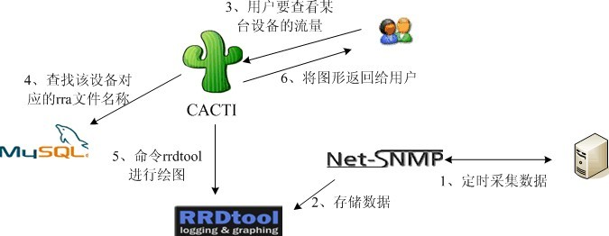
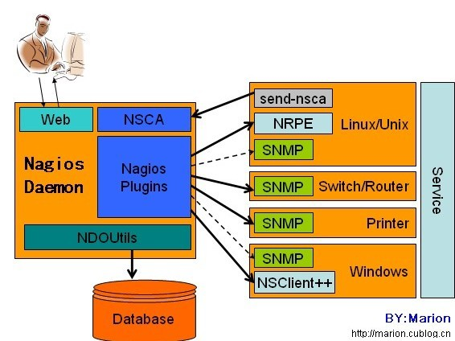
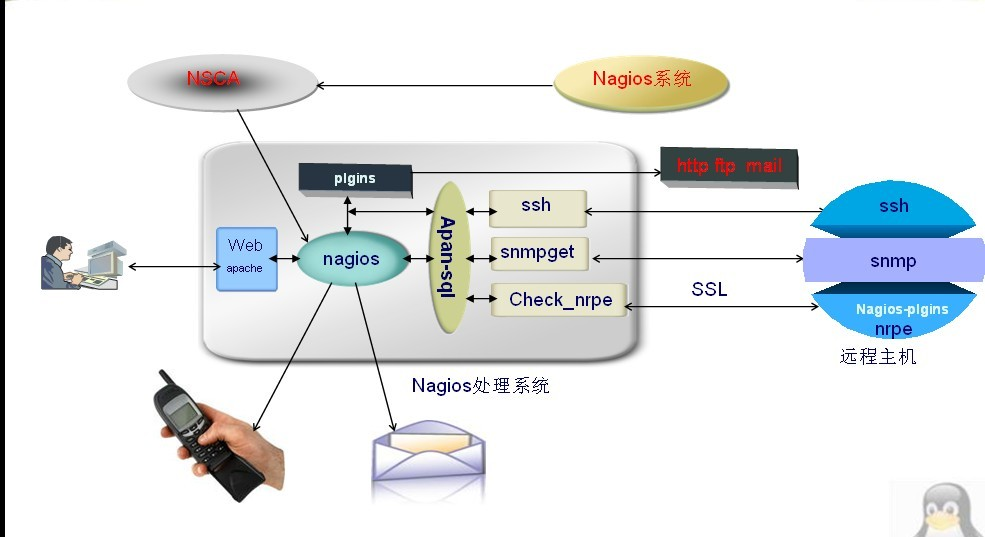

手把手实现企业级开源监控软件cacti+nagios+ntop整合（图解）
此文凝聚笔者(神de信仰)不少心血请尊重笔者劳动，转载请注明出处。 http://freeze.blog.51cto.com/1846439/386132
做一名运维工程师，监控恐怕是日常生活中必不可少的活了，在企业中的监控，大多是用开源软件来实现的，（为什么要用开源？省钱呗..呵呵） 而且开源软件也有着非常优秀的表现，其中著名的有cacti,nagios,ntop,Ganglia，等等..而cacti+nagios+ntop的结合应用，能为企业做到更细微的保证。下面笔者先逐一介绍下：
cacti的简介
网络管理（如主机负载、网络流量等的监控）是系统管理岗工作人员日常工作的一个重要组成部分，许多厂商为此提供了各自的解决方案。早期开源网管软件中比较著名的其中之一的MRTG，是一款使用perl开发的，通过SNMP协议实现管理工作站与设备代理进程间的通讯，以完成对设备的管理和运行状态的监视。MRTG安装配置简单、图形界面直观，因为广受当时网络管理人员的喜爱，也为笔者早期的网络管理工作立下了汗马功劳。
但MRTG也有许多固有的缺点，如：使用文本式的数据库，数据不能重复使用；只能按日、周、月、年来查看数据；每图只能画两个DS（一条线、一个块）；每取一次数据即需要绘图一次，浪费系统资源；同时，它也没有提供管理功能。
有鉴于此，MRTG的作者后来另外又开发了一个工具，即rrdtool。rrdtool是一个性能优良的数据记录器，同时也是一个功能强大的绘图引擎。它使用rrd的数据存储格式，使用得数据可以重复使用；在绘图方面，它可以定义任意时间段进行绘图，能绘出多个DS。但它也有自己的缺点：虽然提供了强大的数据存储及绘图功能，但rrdtool却没有提供类似于MRTG中集成的数据采集功能；同时，它提供了过多的参数，以至于在命令行界面使用起来极为不便；此外，rrdtool也没有提供管理功能。于是cacti应运而生。
简单来说，Cacti就是rrdtool的一个forefront，它内置了快速的获数据取工具、优秀的绘图模板以及许多设计精良的数据获取脚本，从而可以通过结合rrdtool强大的数据抓取、数据存储和绘图功能，轻松实现主机负载、网络流量等信息的走势图的绘制。目前其最新的软件版本是0.8.7g。
cacti是用php语言实现的一个软件，它的运行需要网站服务器（如apache）及PHP环境的支持。同时，cacti还需要Mysql配合PHP程序存储一些变量数据并对变量数据进行调用，如：主机名、主机ip、snmp团体名、端口号、模板信息等变量。
rrdtool的对主机负载、网络流量等信息的统计需要通过SNMP协议实现。经过SNMP抓取到的数据存储于由rrdtool生成的rrd文件中，这些文件通常位于cacti的rra目录中。rrdtool对数据的更新和存储就是对rrd文件的处理，rrd文件是大小固定的归档文件（Round Robin Archive），它能够存储的数据笔数在创建时就已经定义。
这副图片简述了cacti的工作原理:

-
Cacti的实例应用
-网络设置
-
主机系统
- 网络接口流量（进与出的带宽）
- 监控CPU的负载、内存等等
- 监控磁盘的空间、进程数等等
- ......
-
cacti常见的监测对象
- 服务器资源：CPU、内存、磁盘、进程、连接数等
- 服务器类型：WEB、Mail、FTP、数据库、中间件
- 网络接口：流量、转发速度、丢包率
- 网络设备性能、配置文件（对比与备份）、路由数
- 安全设备性能、连接数、攻击数
- 设备运行状态：风扇、电源、温度
- 机房运行环境：电流、电压、温湿度
-
主机系统
好了，简单介绍完cacti后，下面我们一起来看下nagios。
nagios的简介
Nagios是一款用于系统和网络监控的应用程序。它可以在你设定的条件下对主机和服务进行监控，在状态变差和变好的时候给出告警信息
Nagios最初被设计为在Linux系统之上运行，然而它同样可以在类Unix的系统之上运行
-
Nagios更进一步的特征包括：
- 监控网络服务（SMTP、POP3、HTTP、NNTP、PING等）
- 监控主机资源（处理器负荷、磁盘利用率等）
- 简单地插件设计使得用户可以方便地扩展自己服务的检测方法
- 并行服务检查机制
- 具备定义网络分层结构的能力，用"parent"主机定义来表达网络主机间的关系，这种关系可被用来发现和明晰主机宕机或不可达状态
- 当服务或主机问题产生与解决时将告警发送给联系人（通过EMail、短信、用户定义方式）：可以通过飞信，等方式实现时，既可传递给管理员，可高效的保证服务器的维护。
- 具备定义事件句柄功能，它可以在主机或服务的事件发生时获取更多问题定位
- 自动的日志回滚
- 可以支持并实现对主机的冗余监控
- 可选的WEB界面用于查看当前的网络状态、通知和故障历史、日志文件等
Nagios通常由一个主程序(Nagios)、一个插件程序(Nagios-plugins)和四个可选的ADDON(NRPE、NSCA、 NSClient++和NDOUtils)组成。Nagios的监控工作都是通过插件实现的，因此，Nagios和Nagios-plugins是服务器端工作所必须的组件。而四个ADDON中
- NRPE：用来在监控的远程Linux/Unix主机上执行脚本插件以实现对这些主机资源的监控
- NSCA：用来让 被监控的远程Linux/Unix主机主动将监控信息发送给Nagios服务器(这在冗余监控模式中特别要用到)
- NSClient++：用来监控 Windows主机时安装在Windows主机上的组件
- NDOUtils：则用来将Nagios的配置信息和各event产生的数据存入数据库，以实现 这些数据的快速检索和处理
这四个ADDON(附件)中，NRPE和NSClient++工作于客户端，NDOUtils工作于服务器端，而NSCA则需要同时安装在服务器端和客户端

再用一幅图片宏观上展示nagios在企业级应用的位置：

有朋友疑问，既然cacti,和nagios都是网络监控工具，选用其一不是减少很多麻烦，在这里笔者建议两者结合使用，还要结合后文所提到的ntop，以作者的理解，简单阐述下cacti和nagios的优缺点：
cacti：在监控方面有良好的绘图，cacti在流量和图型塑造上要强于nagios，但是在故障分析上有些略逊，而且报警机制也有待完善，这时nagios就派上用场了。 nagios ：适合监视大量服务器上面的大批服务是否正常, 重点并不在图形化的监控, 其集成的很多功能例如报警,都是 cacti 没有或者很弱的。但在绘图以及图型塑造方面精细度比cacti要弱。
通过两者比较，可以很清晰的了解各自的用途。
下面笔者再简单介绍下ntop。
Ntop简介
- MRTG基于SNMP获取信息，对于端口的流量，MRTG能提供精确统计，但对于三层以上的信息则无从得知了。而这正是NTOP的强项。
NTOP能够更加直观地将网络使用量的情况和每个节点计算机的网络带宽使用详细情况显示出来。NTOP是一种网络嗅探器，嗅探器在协助监测网络数据传输、 排除网络故障等方面有着不可替代的作用。可以通过分析网络流量来确定网络上存在的各种问题，如瓶颈效应或性能下降；也可以用来判断是否有黑客正在攻击网络 系统。如果怀疑网络正在遭受攻击，通过嗅探器截获的数据包可以确定正在攻击系统的是什么类型的数据包，以及它们的源头，从而可以及时地做出响应，或者对网 络进行相应的调整，以保证网络运行的效率和安全。
- 管理人员通过NTOP还可以很方便地确定出哪些通信量属于某个特定的网络协议、占主要通信量的是哪个主机、各次通信的目标是哪个主机、数据包发送时间、各主机间数据包传递的间隔时间等。这些信息为网管员判断网络问题及优化网络性能，提供了十分宝贵的信息。
-
NTOP提供以下一些功能：
- 自动从网络中识别有用的信息；
- 将截获的数据包转换成易于识别的格式；
- 对网络环境中的通信失败进行分析；
- 探测网络环境下的通信瓶颈；
- 记录网络通信时间和过程；
- 自动识别客户端正在使用的操作系统；
- 可以在命令行和Web两种方式下运行。
简单介绍完ntop后，笔者在网上找了一张图片，很清晰的解释了ntop的工作位置，从工作位置也可以看出ntop的主要功能.

通过笔者简单介绍，也可以看出来ntop作为监控工具与前两者cacti和nagios的区别，ntop在监控方面，它的角度是从分析网络流量来确定网络上存在的各种问题，说白了就类似个抓包监控工具，只不过通过归纳绘图实现更多的功能。
笔者这样解释相信不少朋友已经明白这三款开源界的元老级监控软件的各自职责，笔者建议朋友们在总结下各自的功能，达到更深刻的理解.也算笔者给朋友们留个话题，好了，接下来开始全源码实现这三者的整合和应用。
编译安装cacti
笔者所用的系统是rhel5.4版本，内核版本号为2.6.18
在开始之前老规矩，先安装编译环境，要想实现cacti的网络监控，还要借助其他一些如mysql,httpd,php等来其原理请参照笔者上一篇博文LEMP架构，为了节省时间，笔者在这里就用yum来装这些包了。配置好yum环境后：